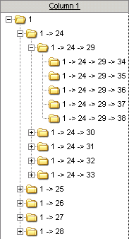
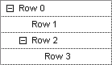
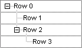
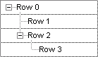
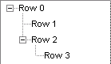
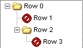

Tree view
Tree view
With M!Table you can implement tree view functionality.
You can build a row hierarchy and browse it with the look & feel of a tree view:

Functions
MTblDefineTree / MTblQueryTree
MTblSetTreeFlags / MTblQueryTreeFlags
MTblDefineTreeLines / MTblQueryTreeLines
MTblSetTreeNodeColors / MTblGetTreeNodeColors
MTblInsertChildRow
MTblSetParentRow / MTblGetParentRow / MTblGetOrigParentRow / MTblIsParentRow
MTblGetFirstChildRow / MTblGetNextChildRow / MTblGetPrevChildRow
MTblGetChildRowCount
MTblIsRowDescOf
MTblDeleteDescRows
MTblGetRowLevel
MTblExpandRow / MTblCollapseRow
MTblSortTree
MTblSetCellImage / MTblSetCellImageExp
MTblSetNodeImages / MTblGetNodeImages
Messages
MTM_ExpandRow / MTM_ExpandRowDone
MTM_CollapseRow / MTM_CollapseRowDone
MTM_LoadChildRows
MTM_QueryAutoNormHierarchy
Tree Flags
Tree flags
Row flags
MTBL_ROW_CANEXPAND
MTBL_ROW_ISEXPANDED
MTBL_ROW_HIDDEN
Table flags
MTBL_FLAG_EXPAND_ROW_ON_DBLCLK
Hints and tips
Building a tree
If you want to use a tree, of course you have to build it first.
For that purpose you have to define a row hierarchy. More precisely you have to define parent-child relationships between rows. The primary function to achieve this is MTblSetParentRow.
Imagine you have two rows - row 0 and 1 - and you want that row 0 becomes the parent of row 1, you have to do the following:
Call MTblSetParentRow( hWndTbl, 1, 0, MTSPR_REDRAW )
Row 0 is now the parent of row 1 - or in other words - row 1 is now a child of row 0.
Now imagine there is a third row - row 2 - and you want that row 0 also becomes the parent of row 2:
Call MTblSetParentRow( hWndTbl, 2, 0, MTSPR_REDRAW )
Row 0 is now the parent of row 1 and 2.
Finally there is another row - row 3 - and you want that row 2 becomes the parent of row 3:
Call MTblSetParentRow( hWndTbl, 3, 2, MTSPR_REDRAW )
Now we have the following hierarchy:
Row 0
Row 1
Row 2
Row 3
Row 0 is the parent of row 1 and 2 - or in other words - row 1 and 2 are childs of row 0.
Row 2 is the parent of row 3 - or in other words - row 3 is a child of row 2.
And: Row 1, 2 and 3 are descendant of row 0 and row 3 is descendant of row 2.
Of course MTblSetParentRow requires that the rows already exist. To add a new row as a child of an existing row, MTblInsertChildRow can be used.
Let's see the differences:
! Using MTblSetParentRow
Set nRow0 = SalTblInsertRow( hWndTbl, TBL_MaxRow )
Set nRow1 = SalTblInsertRow( hWndTbl, TBL_MaxRow )
Call MTblSetParentRow( hWndTbl, nRow1, nRow0, MTSPR_REDRAW )
Set nRow2 = SalTblInsertRow( hWndTbl, TBL_MaxRow )
Call MTblSetParentRow( hWndTbl, nRow2, nRow1, MTSPR_REDRAW )
Set nRow3 = SalTblInsertRow( hWndTbl, TBL_MaxRow )
Call MTblSetParentRow( hWndTbl, nRow3, nRow2, MTSPR_REDRAW )
! Using MTblInsertChildRow
Set nRow0 = SalTblInsertRow( hWndTbl, TBL_MaxRow )
Set nRow1 = MTblInsertChildRow( hWndTbl, nRow0, MTICR_REDRAW )
Set nRow2 = MTblInsertChildRow( hWndTbl, nRow0, MTICR_REDRAW )
Set nRow3 = MTblInsertChildRow( hWndTbl, nRow2, MTICR_REDRAW )
Visualizing a tree
In "Building a tree" merely the logical row hierarchy was defined, but of course we want that our tree looks like in a tree view.
To achive this, first of all we have to call MTblDefineTree to define the tree column, the node size and the indention:
Call MTblDefineTree( hWndTbl, hWndCol, 8, 16 )

Not bad, but where are the tree lines? No problem, call MTblDefineTreeLines to show them:
Call MTblDefineTreeLines( hWndTbl, MTLS_DOT, COLOR_DarkGray )

Hmm, the tree nodes don't really look like in a tree view. Let's modify them with MTblSetTreeNodeColors:
Call MTblSetTreeNodeColors( hWndTbl, COLOR_DarkGray, COLOR_Black, COLOR_White )

Quite good, but the row lines are really bothering. So get rid of them with MTblSetTreeFlags:
Call MTblSetTreeFlags( hWndTbl, MTBL_TREE_FLAG_NO_ROWLINES, TRUE )

Finally, let's load some images with M!Image and set them with MTblSetCellImage and MTblSetCellImageExp :
Set nImgFolder = MImgLoadFromFile( ... )
Set nImgOpenFolder = MImgLoadFromFile( ... )
Set nImgItem = MImgLoadFromFile( ... )
Call MTblSetCellImage( hWndCol, 0, nImgFolder, MTSI_REDRAW )
Call MTblSetCellImageExp( hWndCol, 0, nImgOpenFolder, MTSI_REDRAW )
Call MTblSetCellImage( hWndCol, 1, nImgItem, MTSI_REDRAW )
Call MTblSetCellImage( hWndCol, 2, nImgFolder, MTSI_REDRAW )
Call MTblSetCellImageExp( hWndCol, 2, nImgOpenFolder, MTSI_REDRAW )
Call MTblSetCellImage( hWndCol, 3, nImgItem, MTSI_REDRAW )

Oh yes, now our tree looks like in a tree view!
Created with the Personal Edition of HelpNDoc: Effortlessly Create Professional Documentation with HelpNDoc's Clean UI